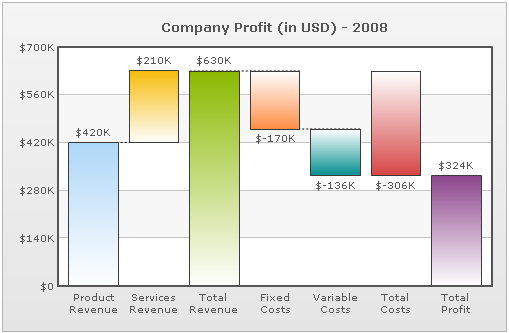

| Waterfall (Cascade Chart) > Overview |
A waterfall (cascade) chart is a special type of column chart, used to show how an initial value is increased and decreased by a series of intermediate values, leading to a final value. Shown below is a simple waterfall chart developed using PowerCharts:  The data for this chart can be listed as under: |
<chart caption="Company Profit (in USD) - 2008" numberPrefix="$" connectorDashed="1" sumLabel="Total Profit"> {
"chart":{
"caption":"Company Profit (in USD) - 2008",
"numberprefix":"$",
"connectordashed":"1",
"sumlabel":"Total Profit"
},
"data":[{
"label":"Product Revenue",
"value":"420000"
},
{
"label":"Services Revenue",
"value":"210000"
},
{
"label":"Total Revenue",
"issum":"1"
},
{
"label":"Fixed Costs",
"value":"-170000"
},
{
"label":"Variable Costs",
"value":"-136000"
},
{
"label":"Total Costs",
"issum":"1",
"cumulative":"0"
}
]
}
|
Let’s move on to see the numerous configuration options available exclusively for waterfall charts. |